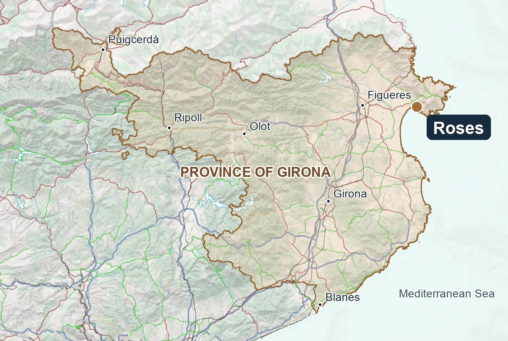
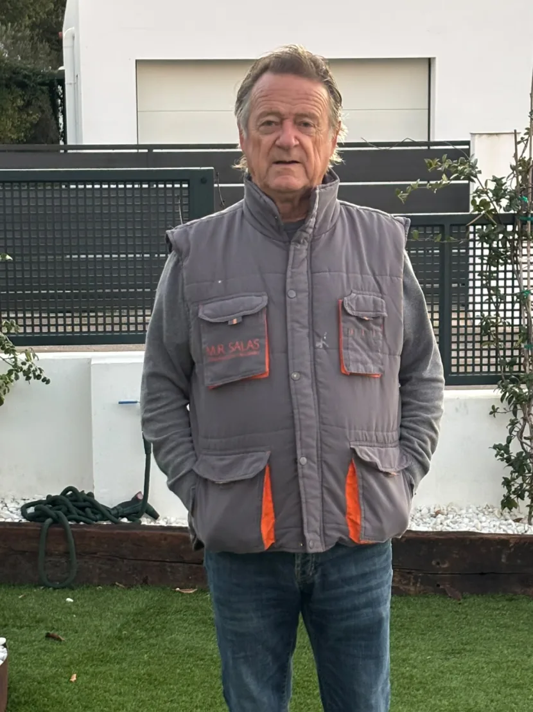

What would you like to renovate?
Choose the type of work and draft a WhatsApp message to Manolo.


Four eras of building and renovation
Scroll or select “Before” and “After” to see each transformation.
Illustrated examples of building and renovation work.
Illustrated examples of building and renovation work.
1980s
Flaking render and worn shutters.


1990s
Flaking render on the façade and damp beneath the balcony.


2000s
A run-down porch and damaged outdoor paving.

2026
A villa under construction, with masonry work on both floors and the sea in the distance.

Example project
Porch renovation
8 workers
led by Manolo

Example renovation shown with illustrative images.
Renovated porch and paving
The wide view shows the entrance, porch and outdoor paving after the work was completed.
The details behind a renovation
These three points on a damp façade help show where water gets in and how it drains away.
Illustrated example of a restored façade.
Where the window meets the wall
We check the joint between the frame and the wall, as well as the sill below. The sill helps direct rainwater away from the façade.
Builder in Roses and the Alt Empordà
Manolo Rodríguez

Manolo builds, renovates and repairs homes in the Empordà. On the first visit, he looks at the property with you and explains where to start. He leads the team and stays your point of contact through the final check.
- Years in the trade
- 50+
- Workers he leads
- 8
From the first visit to the final check
You speak directly with Manolo, who leads a team of 8 workers.
-

We visit the property
We look at what your home needs and talk about what you’d like to change.
-
We agree on the work
We agree what needs doing and in what order.
-
We check the finish
We go through the finishing touches with you and answer any final questions.
Illustrative scenes.
Tell Manolo about your projectQuestions before you get started
Do you take on small jobs?
Yes. Tell me what you need and where the property is.
What should I tell you when I call?
Tell me where the property is, what you’d like to renovate or repair and whether it’s urgent. You can also send me photos on WhatsApp.
Do you work outside Roses?
I work in Roses and the Alt Empordà. Tell me where the property is and we’ll see what’s possible.
Areas we cover
Province of Girona
I’m based in Roses. Tell me which town your property is in and I’ll confirm whether I can come out to you.
Check my area
Let’s talk about your project.
Tell me what you’d like to do and where the property is.

Draft your enquiry
Message preview
You can add details and photos in WhatsApp. Privacy